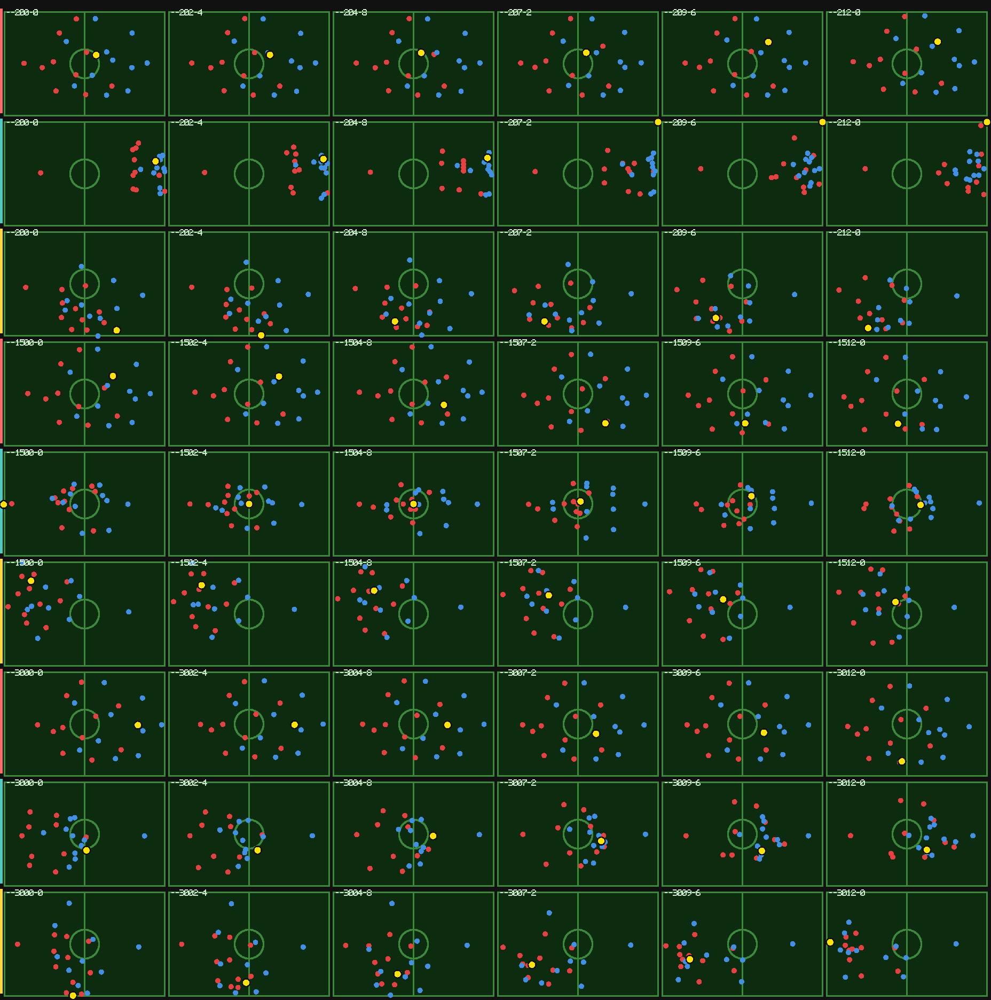

feat/c1-c5-match-realism · 2026-10-18 · 5 个 commit，一个 issue 一个每三行一组，同一个 12 秒时间窗、同一采样口径（0.2s 一帧）。三个窗口：t=200s、1500s、3000s。

| 指标 | OLD | NEW | 真实 | NEW/真实 |
|---|---|---|---|---|
| 综合距离（越小越像） | 0.542 | 0.124 | 0 | ↓ 4.4× |
| 纵深 hd（米） | 38.7 | 20.8 | 18.3 | 1.14× |
| 客队纵深 ad（米） | 36.4 | 19.1 | 18.5 | 1.03× |
| 紧凑度 spread（米） | 20.7 | 12.3 | 12.8 | 0.96× |
| 重心间距 gap（米） | 18.9 | 5.3 | 5.2 | 1.01× |
| 位移/窗 disp（米） | 6.27 | 15.8 | 13.5 | 1.17× |
| 横向占比 lat | 0.37 | 0.33 | 0.43 | 0.78× |
| 混队度 mix | 0.80 | 0.68 | 0.80 | 0.86× |
| Commit | Issue | 做了什么 | 效果 |
|---|---|---|---|
29f027c | #170 C1 | 运动学：速度/加速度/转弯半径，拍内 10 子步，去掉到点冻结 | disp 6.27 → 8.99 |
9706cb7 | #171 C2 | 队形：5 个关键帧 + 按球位插值，替换 16 常量解析公式 | hd 38.7 → 21.3，spread 20.7 → 11.6 |
6afeced | #172 C3 | 盯人：时间-拦截代价 + 换人惩罚的最小代价匹配 | gap 9.5 → 5.3，mix 0.45 → 0.65，综合距离 0.542 → 0.155 |
699452c | #173 C4 | 压迫场：控制值选压迫点 + 弱侧向球收；横向调整周期 120s → 18s | 综合距离 → 0.124，lat 0.27 → 0.33 |
118754f | #174 C5 | 持球者选项评估：确定性前向模型选传球目标 | 距离 0.124 → 0.143（负结果，见下） |
MatchConfig.realism（motion / formation / marking / press / carrier），
默认全关 ⇒ 旧路径与既有 golden 逐位不变。REALISM=motion+formation+marking+press node tools/visual-review/like-football.mjs viewer/engine.wasm
lat 0.33 vs 真实 0.43（横向移动仍然偏少），mix 0.68 vs 0.80。
这两项都需要「进攻方也围绕防守者移动」——目前只做了防守方盯人。
另外 disp 偏大 17%：跑动总量比真实多。
git checkout feat/c1-c5-match-realism
# 重建 wasm（改了引擎就要重建，否则量的还是旧产物）
cd engine && cargo build --target wasm32-unknown-unknown --release
cp target/wasm32-unknown-unknown/release/fm_engine.wasm ../viewer/engine.wasm
cd ..
# 旧 vs 新
REALISM= node tools/visual-review/like-football.mjs viewer/engine.wasm 5 12
REALISM=motion+formation+marking+press node tools/visual-review/like-football.mjs viewer/engine.wasm 5 12
# 重新生成这张对比图
node tools/make-c1c5-report.mjs viewer/engine.wasm out.png 42 12 6 "200,1500,3000"